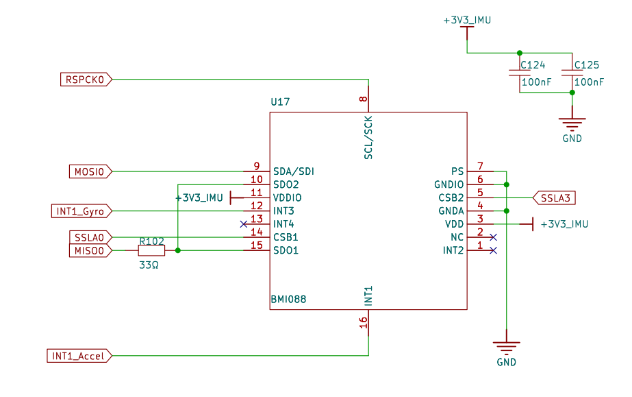
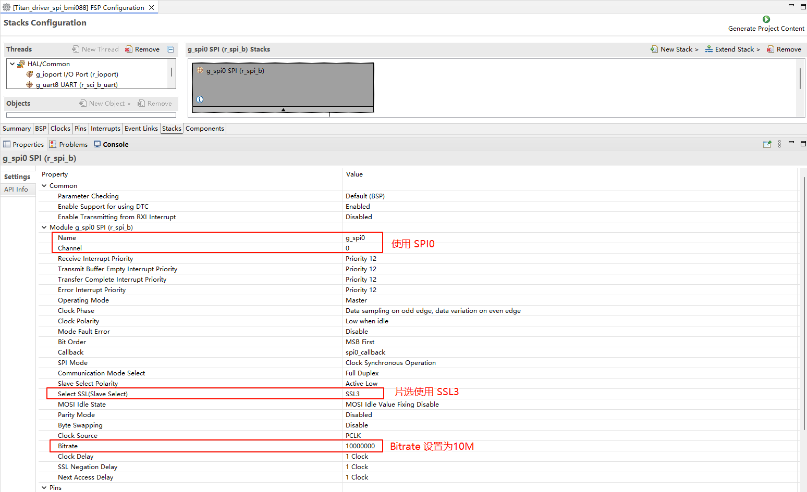
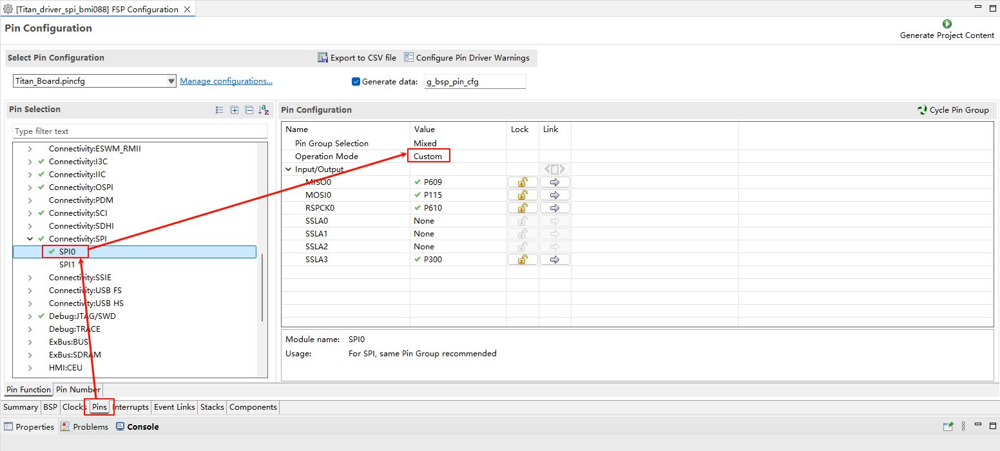
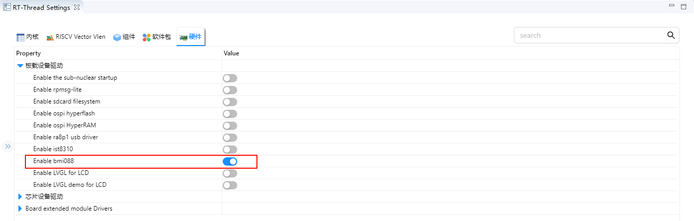
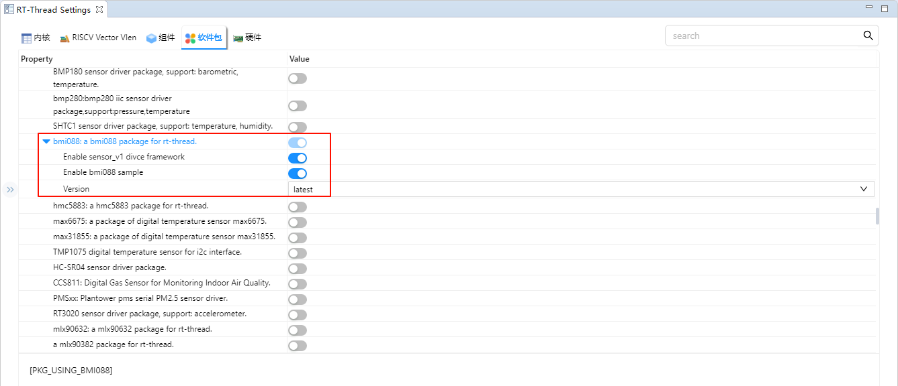
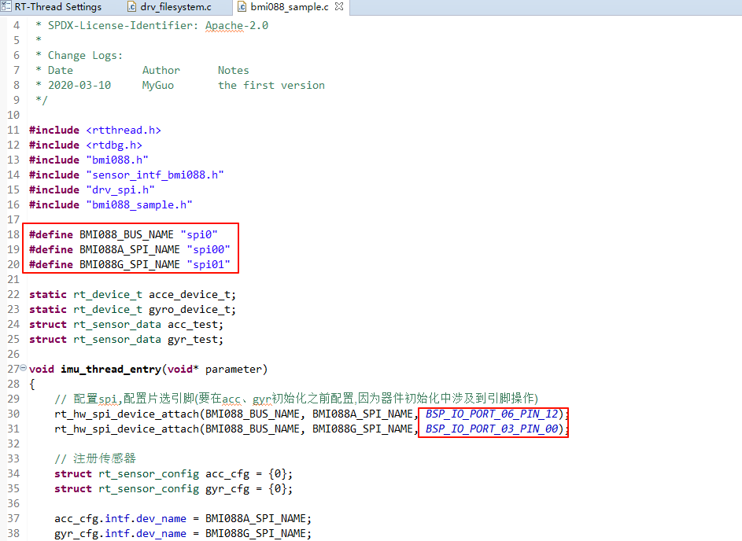
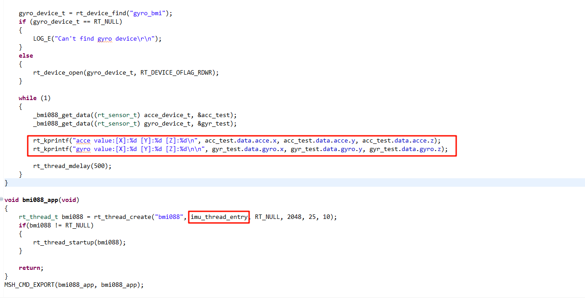
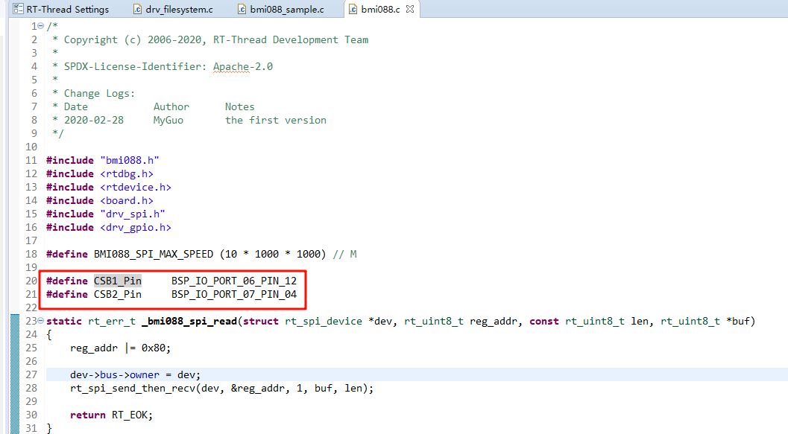
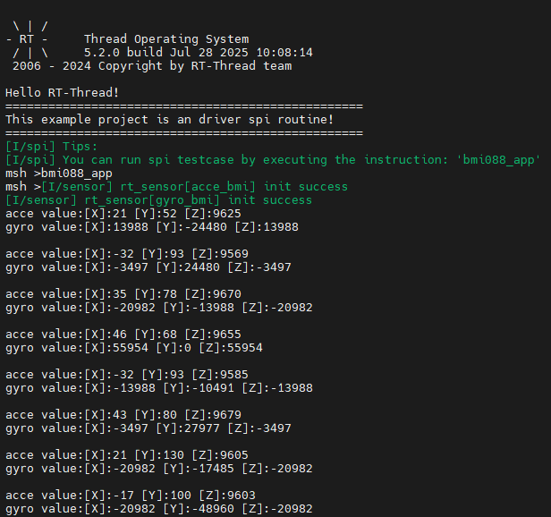

BMI088 陀螺仪使用说明
中文 | English
简介
本示例展示了如何在 Titan Board 上使用 RA8 系列 MCU 的 SPI 模块，结合 RT-Thread SPI 驱动框架 与 BMI088 软件包（六轴 IMU：三轴加速度计 + 三轴陀螺仪） 完成传感器初始化与数据读取。
BMI088 简介
1. 概述
BMI088 是 Bosch Sensortec 推出的 高性能 6 轴 IMU（Inertial Measurement Unit，惯性测量单元），集成了 3 轴加速度计 和 3 轴陀螺仪。
它专为 无人机、机器人、工业自动化、导航系统 等需要高稳定性和低噪声的场景设计。
BMI088 以 高抗振性 和 低噪声性能 著称，相比常见消费级 IMU（如 MPU6050、BMI160 等），在工业和无人机领域应用更广泛。
2. 核心特性
(1) 加速度计（Accelerometer）
测量范围：±3 g / ±6 g / ±12 g / ±24 g
噪声密度：约 120 µg/√Hz
采样率：最高 1.6 kHz
零点偏移（Offset）：出厂已校准
特点：高稳定性、低噪声、宽动态范围
(2) 陀螺仪（Gyroscope）
测量范围：±125 °/s、±250 °/s、±500 °/s、±1000 °/s、±2000 °/s
噪声密度：约 0.014 °/s/√Hz
采样率：最高 2 kHz
内置 抗震设计，减少高频振动影响
零偏稳定性好，适合长期运行
(3) 接口与电源
通信接口：SPI（最高 10 MHz）、I²C（最高 400 kHz）
工作电压：1.71V ~ 3.6V
封装：3 mm × 4.5 mm × 0.95 mm（LGA-16）
3. 工作原理
加速度计：通过检测 MEMS 结构在三轴方向的加速度，输出对应的数字信号。
陀螺仪：基于科里奥利效应测量角速度，提供三轴旋转运动信息。
数据融合：结合加速度和陀螺仪数据，可实现姿态解算（Pitch、Roll、Yaw）。
4. 主要优势
抗振动能力强
陀螺仪内部有特殊抗震结构，适合无人机等强振动环境。
低噪声性能
加速度计和陀螺仪均具备低噪声输出，保证姿态解算的精度。
工业级可靠性
比消费级 IMU（如 BMI160、MPU6050）更稳定，温漂小。
高带宽
陀螺仪带宽最高可达 2 kHz，适合高速控制场景。
5. 应用场景
无人机：飞行姿态检测、导航、稳定控制
机器人：运动控制、SLAM、平衡控制
工业测量：平台稳定、机械臂运动检测
车载系统：惯性导航、辅助定位
运动追踪：VR/AR、智能穿戴设备
RA8 系列 SPI 模块（r_spi_b）概述
RA8 系列 MCU 内置 增强型 SPI 模块（r_spi_b），可用于与各类外设进行高速串行通信，如 Flash、传感器、显示器、音频编解码器等。该模块支持主机模式和从机模式，提供全双工通信能力，并在硬件层面集成了丰富的缓冲、时钟和 DMA 控制机制，能够有效降低 CPU 负担。
1. 基本特性
工作模式
支持 主机模式（Master） 和 从机模式（Slave）
支持 全双工通信（同时发送与接收）
支持 半双工模式，适合某些单向传输的外设
时钟特性
支持 高达 166 MHz 的串行时钟（SPCLK，取决于系统时钟和芯片规格）
可配置的 极性（CPOL） 和 相位（CPHA），支持标准 SPI Mode 0/1/2/3
数据格式
支持 8 位、16 位、32 位帧格式
支持 MSB-first 和 LSB-first 传输
片选管理
支持 硬件片选（SSL0~SSL3）
也可使用 GPIO 软件片选
缓冲与 DMA
内部具备 FIFO 缓冲区，可减少中断频率
支持 DTC/DMA 自动传输，适合大数据量通信
中断与事件
发送完成中断
接收完成中断
传输错误中断（如溢出、欠载）
2. SPI 模块架构
RA8 系列 SPI（r_spi_b）内部主要由以下子模块组成：
时钟控制单元（Clock Control Unit）
控制串行时钟 SPCLK 的生成
可选择分频因子，调整通信速率
提供极性（CPOL）和相位（CPHA）配置
传输控制单元（Transfer Control Unit）
控制数据帧的长度（8/16/32 bit）
配置数据顺序（MSB/LSB）
控制发送/接收方向
FIFO 缓冲区
发送缓冲 FIFO
接收缓冲 FIFO
有效降低中断处理频率，提高系统性能
片选控制单元（SSL Control Unit）
提供 4 个独立片选信号（SSL0~SSL3）
自动拉低/释放片选信号
支持多从设备应用场景
DMA/DTC 支持
SPI 模块可直接与 DMA/DTC 配合
实现 无 CPU 干预的数据流式传输
特别适用于传感器数据采集、外部存储器访问等
中断控制
发送完成中断（TXI）
接收完成中断（RXI）
传输结束中断（TEI）
错误中断（ERI）
3. 工作原理
主机模式下通信
配置 SPCLK、CPOL、CPHA
配置片选信号 SSLx
写入数据到发送 FIFO
SPI 硬件自动移位输出，同时接收数据
从机模式下通信
等待主机片选信号有效
接收来自主机的数据，同时可发送响应数据
支持 DMA，将接收数据写入内存
FIFO 与 DMA 协同
短数据传输：由中断驱动
大数据传输：由 DMA/DTC 自动完成，CPU 仅需配置起始参数
RT-Thread SPI 驱动框架
RT-Thread SPI（Serial Peripheral Interface）框架 是 RT-Thread 设备驱动层提供的统一接口，用于管理各类 MCU 的 SPI 总线外设。该框架对底层硬件寄存器进行了统一抽象，使应用层能够通过标准化 API 与多种 SPI 从设备进行数据通信，实现高效、可靠且跨平台的 SPI 访问。
1. 设备模型
在 RT-Thread 中，SPI 被划分为 总线（Bus） 和 设备（Device） 两个层次。SPI 设备作为 设备对象（struct rt_device 的子类，类型为 RT_Device_Class_SPIBUS 或 RT_Device_Class_SPIDevice）进行管理。开发者无需直接操作寄存器，只需通过 RT-Thread 提供的 SPI 接口函数，即可完成数据发送、接收与片选控制。
2. 操作接口
应用程序可通过 RT-Thread 提供的 I/O 设备管理与 SPI 接口访问 SPI 设备，常用接口如下：
查找 SPI 设备
rt_device_t rt_device_find(const char* name);
自定义传输消息序列
struct rt_spi_message *rt_spi_transfer_message(struct rt_spi_device *device,
struct rt_spi_message *message);
该函数可传输一连串消息，用户可自定义每个待传输 message 结构体的参数，以灵活控制片选时序与传输方式。
struct rt_spi_message 定义如下：
struct rt_spi_message
{
const void *send_buf; /* 发送缓冲区指针 */
void *recv_buf; /* 接收缓冲区指针 */
rt_size_t length; /* 发送 / 接收 数据字节数 */
struct rt_spi_message *next; /* 指向下一条消息 */
unsigned cs_take : 1; /* 片选选中 */
unsigned cs_release : 1; /* 释放片选 */
};
传输一次数据
rt_size_t rt_spi_transfer(struct rt_spi_device *device,
const void *send_buf,
void *recv_buf,
rt_size_t length);
仅发送一次数据（忽略接收）
rt_size_t rt_spi_send(struct rt_spi_device *device,
const void *send_buf,
rt_size_t length);
仅接收一次数据
rt_size_t rt_spi_recv(struct rt_spi_device *device,
void *recv_buf,
rt_size_t length);
连续发送两次数据（中间片选保持）
rt_err_t rt_spi_send_then_send(struct rt_spi_device *device,
const void *send_buf1,
rt_size_t send_length1,
const void *send_buf2,
rt_size_t send_length2);
先发送后接收数据（中间片选保持）
rt_err_t rt_spi_send_then_recv(struct rt_spi_device *device,
const void *send_buf,
rt_size_t send_length,
void *recv_buf,
rt_size_t recv_length);
3. 框架特点
设备抽象统一：支持主从模式下的标准接口调用。
跨平台支持：应用层可在不同 MCU 平台上直接移植。
灵活片选控制：支持单次、连续、组合传输方式。
消息队列机制：通过
rt_spi_message实现复杂传输链路控制。可扩展性强：可结合 DMA、RT-Thread IPC 等机制提升性能。
硬件说明
Titan Board 使用 SPI0 与 BMI088 陀螺仪通信。

FSP 配置
打开 FSP 工具，新建 Stacks 并选择 r_spi_b：

配置 SPI0 引脚：

RT-Thread Settings 配置
使能 bmi088：

在 bmi088 软件包配置中使能 sensor_v1 和 sample：

软件说明
在 Titan Board 上使用 BMI088 软件包需要做如下修改进行适配：
修改
./packages/bmi088-latest/sample/bmi088_sample.c:
将 SPI BUS 修改为 spi0，修改片选引脚：

添加 imu 数据打印并创建数据采集线程：

修改
./packages/bmi088-latest/src/bmi088.c
修改 CS 引脚适配瑞萨开发板：

BMI088 驱动示例程序位于 ./packages/bmi088-latest/samples/bmi088_sample.c：
#include <rtthread.h>
#include <rtdbg.h>
#include "bmi088.h"
#include "sensor_intf_bmi088.h"
#include "drv_spi.h"
#include "bmi088_sample.h"
#define BMI088_BUS_NAME "spi0"
#define BMI088A_SPI_NAME "spi00"
#define BMI088G_SPI_NAME "spi01"
static rt_device_t acce_device_t;
static rt_device_t gyro_device_t;
struct rt_sensor_data acc_test;
struct rt_sensor_data gyr_test;
#define BMI088A_PIN BSP_IO_PORT_12_PIN_10
#define BMI088G_PIN BSP_IO_PORT_12_PIN_14
void imu_thread_entry(void* parameter)
{
// 配置spi,配置片选引脚(要在acc、gyr初始化之前配置,因为器件初始化中涉及到引脚操作)
rt_hw_spi_device_attach(BMI088_BUS_NAME, BMI088A_SPI_NAME, 0x060C);
rt_hw_spi_device_attach(BMI088_BUS_NAME, BMI088G_SPI_NAME, 0x0704);
// 注册传感器
struct rt_sensor_config acc_cfg = {0};
struct rt_sensor_config gyr_cfg = {0};
acc_cfg.intf.dev_name = BMI088A_SPI_NAME;
gyr_cfg.intf.dev_name = BMI088G_SPI_NAME;
rt_hw_bmi088_init("bmi", &acc_cfg, &gyr_cfg);
acce_device_t = rt_device_find("acce_bmi");
if (acce_device_t == RT_NULL)
{
LOG_E("Can't find acce device\r\n");
}
else
{
rt_device_open(acce_device_t, RT_DEVICE_OFLAG_RDWR);
}
gyro_device_t = rt_device_find("gyro_bmi");
if (gyro_device_t == RT_NULL)
{
LOG_E("Can't find gyro device\r\n");
}
else
{
rt_device_open(gyro_device_t, RT_DEVICE_OFLAG_RDWR);
}
while (1)
{
_bmi088_get_data((rt_sensor_t) acce_device_t, &acc_test);
_bmi088_get_data((rt_sensor_t) gyro_device_t, &gyr_test);
rt_kprintf("acce value:[X]:%d [Y]:%d [Z]:%d\n", acc_test.data.acce.x, acc_test.data.acce.y, acc_test.data.acce.z);
rt_kprintf("gyro value:[X]:%d [Y]:%d [Z]:%d\n\n", gyr_test.data.gyro.x, gyr_test.data.gyro.y, gyr_test.data.gyro.z);
rt_thread_mdelay(500);
}
}
void bmi088_app(void)
{
rt_thread_t bmi088 = rt_thread_create("bmi088", imu_thread_entry, RT_NULL, 2048, 25, 10);
if(bmi088 != RT_NULL)
{
rt_thread_startup(bmi088);
}
return;
}
MSH_CMD_EXPORT(bmi088_app, bmi088_app);
编译&下载
RT-Thread Studio：在RT-Thread Studio 的包管理器中下载 Titan Board 资源包，然后创建新工程，执行编译。
编译完成后，将开发板的 USB-DBG 接口与 PC 机连接，然后将固件下载至开发板。
运行效果
打开串口工具，在终端里输入 bmi088_app 指令获取陀螺仪数据：
